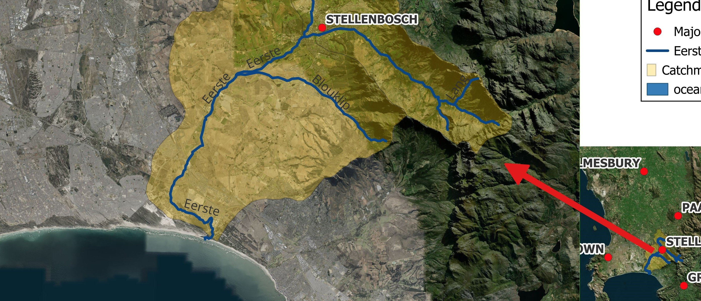
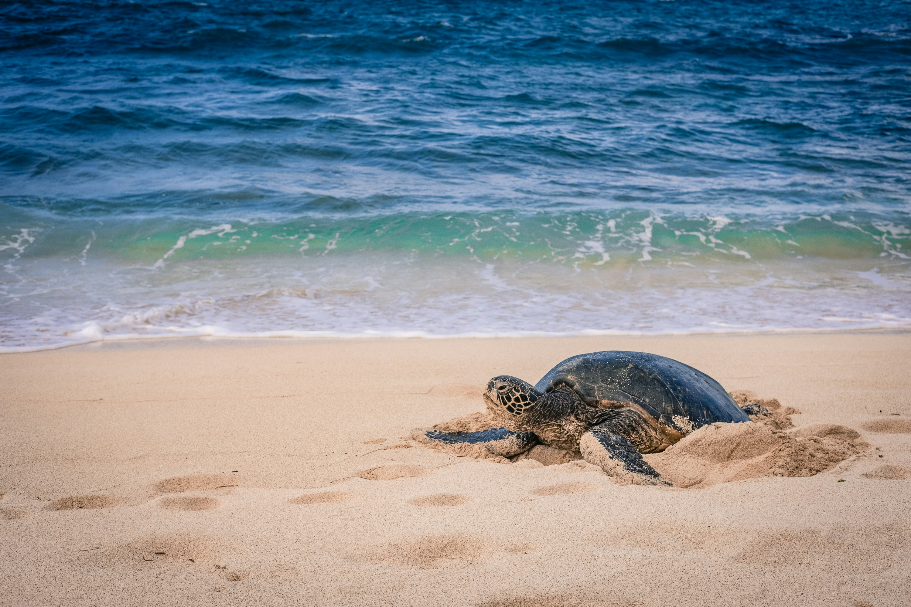
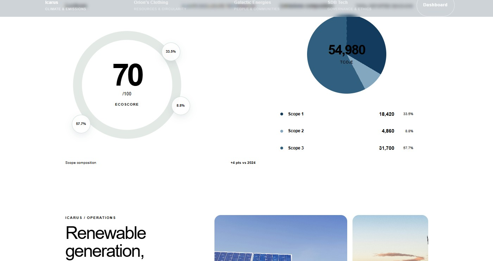
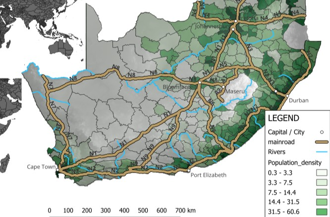
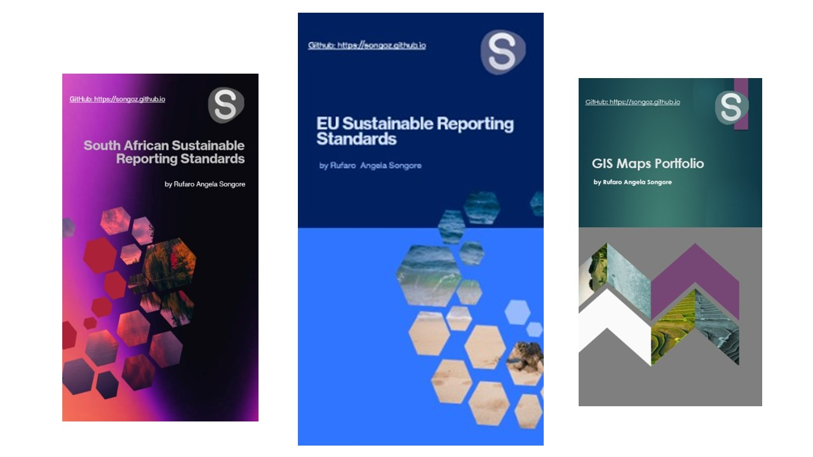
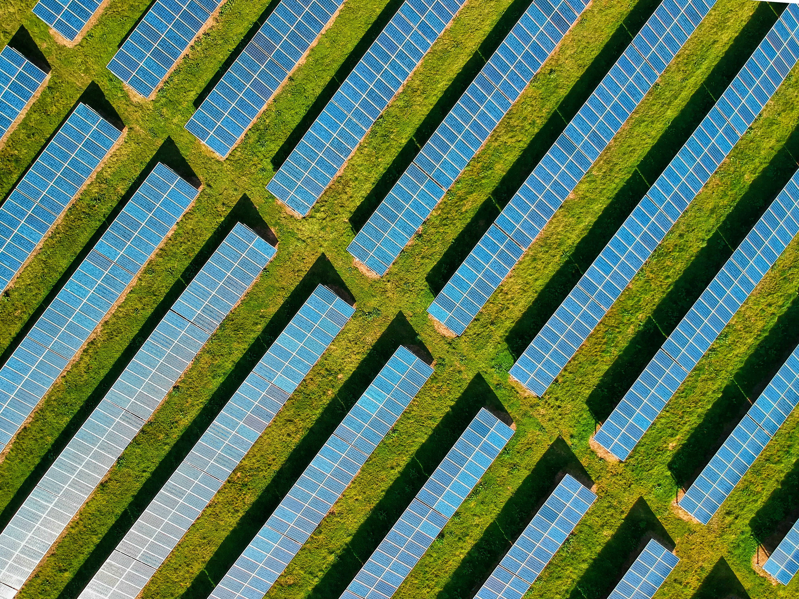
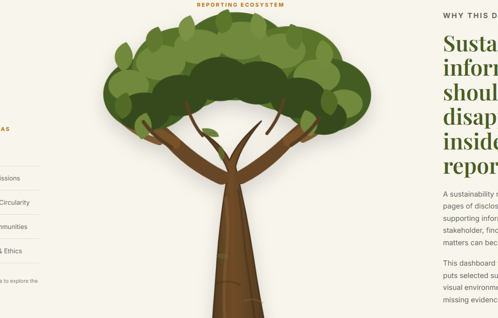
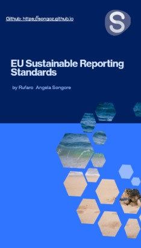
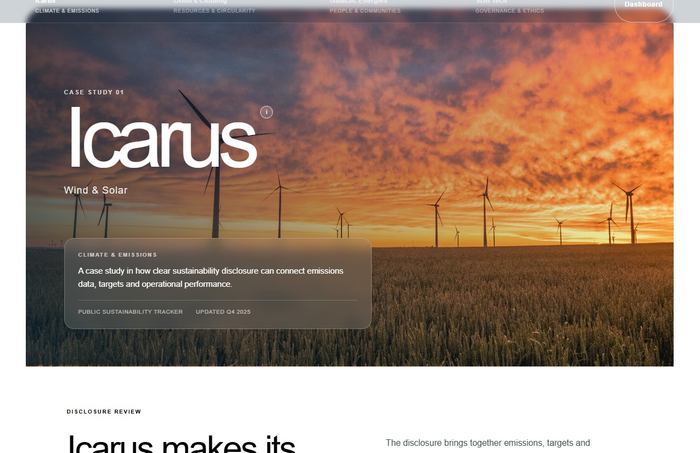

Spatial research
Sustainable Development · Data Analysis · Business & Sustainability
A little about me
I am a Sustainable Development master's student at the University of Marburg, with a background in Environment and Development from Stellenbosch University.
My studies in Geography and Public and Development Management have shaped my interest in environmental management, economic development and the role of institutions in addressing sustainability challenges.
I enjoy working with information, whether through spatial research, data analysis or sustainability reporting, and understanding what it tells us about the decisions organisations and communities make. My experience also extends beyond academia, including GIS and field data work and running a small dried-fruit business in Zimbabwe.
I am interested in opportunities where I can bring together research, analytical skills and an understanding of sustainability in practical organisational and development contexts.
More about me →Selected work
A selection of academic, independent and applied work across environmental research, data analysis and sustainability.
Exploring environmental conditions, spatial patterns and the relationship between people, places and resources.


Using data, analytical tools and visual communication to make information easier to explore and interpret.


Examining how organisations understand, measure and communicate sustainability, and how this connects to business decisions.





Knowledge & Methods
An overview of the frameworks, analytical tools and research methods informing my academic and practical work.
Reporting standards, disclosure frameworks and approaches to sustainable finance.
Data handling, visualisation, spatial analysis and digital presentation.
Working with evidence, interpreting findings and understanding research limitations.
Working approach
My work brings together research, analysis and communication. The process depends on the question, the available evidence and the intended use of the findings.
Define the question, context and wider sustainability or organisational challenge.
Gather relevant information and work with appropriate research methods and data.
Identify patterns, interpret findings and consider what the evidence can and cannot show.
Present findings clearly through written analysis, visualisations and practical insights.
Get in touch
I welcome opportunities, professional connections and conversations around sustainability, research and data analysis.